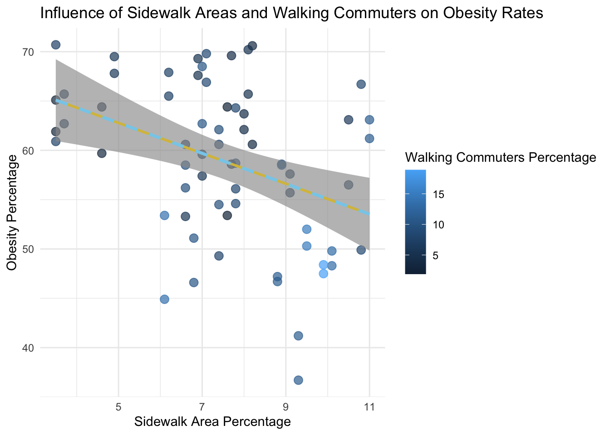

Model Analysis
Introduction
Urban environments play a crucial role in shaping public health outcomes, particularly in promoting active commuting behaviors like walking. Sidewalk infrastructure and walkability are often cited as key factors influencing physical activity levels and, consequently, obesity rates. However, understanding the nuanced relationships between urban design, commuter behavior, and health outcomes requires robust data-driven analyses.
This model analysis explores the interplay between sidewalk area percentage, walking commuter rates, and obesity rates across neighborhoods. Specifically, the analysis seeks to answer the following questions:
- How does the availability of sidewalks influence walking commuter
rates?
- What is the impact of sidewalk area percentage and walking commuter
rates on obesity rates?
- Do walking commuter rates mediate the relationship between sidewalk
infrastructure and obesity outcomes?
- Are there interaction effects between sidewalk availability and
walking behavior on obesity?
- How do neighborhoods cluster based on sidewalk coverage, walking rates, and obesity levels?
By addressing these questions, this analysis aims to provide actionable insights for urban planning and public health policies. The findings underscore the importance of pedestrian-friendly infrastructure in promoting active lifestyles, reducing obesity rates, and fostering healthier communities. Through statistical modeling, interaction testing, mediation analysis, and clustering, we uncover both direct and indirect pathways linking sidewalk infrastructure to health outcomes.
library(ggridges)
library(tidyverse)
library(plotly)
library(gridExtra)
library(reshape2)
library(mediation)
library(dplyr)
commuting_df = read.csv("data/commuting.csv", na = c("NA",".","")) |>
janitor::clean_names() |>
rename(geo_type = geo_type_desc) |>
filter(
geo_type %in% c("UHF 42", "Citywide", "Borough"))
overweight_overall_df = read_csv("data/overweightoverall.csv", na = c("NA",".","")) |>
janitor::clean_names() |>
rename(
obs_number = number,
obs_percent = percent
) |>
separate(
obs_percent,
into = c("obs_percent", "obs_percent_range"),
sep = "\\s*\\(\\s*",
convert = TRUE
) |>
mutate(obs_percent_range = str_remove(obs_percent_range, "\\)$"))
sidewalk_df = read_csv("data/sidewalk.csv", na = c("NA",".","")) |>
janitor::clean_names() |>
mutate(neighborhood_geo_id = paste(geography, geo_id, sep = ", "))
commuting_sidewalk_df =
inner_join(commuting_df, sidewalk_df, by = c("geo_id", "geo_rank", "geography")) |>
dplyr::select(-time_period.x, -time_period.y, everything()) |>
mutate(
bicycle_info = paste0(bicycle_number, " (", bicycle_percent, "%)"),
car_truck_van_info = paste0(car_truck_or_van_number, " (", car_truck_or_van_percent, "%)"),
public_transport_info = paste0(public_transportation_number, " (", public_transportation_percent, "%)"),
walked_info = paste0(walked_number, " (", walked_percent, "%)")
)Simple Linear Regression
We begin by examining the direct relationship between sidewalk area percentage and walking commuter rates. A simple linear regression model was built to quantify how the availability of sidewalk infrastructure influences the proportion of residents who walk to work. This analysis serves as a foundation for understanding the basic relationship between urban design and commuting behavior before exploring more complex relationships.
\[Y_{Walking Commuters Percentage}=\beta_0 + \beta_1X_{Sidewalk Area Percentage} + \epsilon\]
side_walking_data = commuting_sidewalk_df |>
dplyr::select(geography, percent_of_land_area, walked_percent) |>
mutate(
walked_percent = as.numeric(walked_percent),
percent_of_land_area = as.numeric(percent_of_land_area)
) |>
filter(!is.na(walked_percent) & !is.na(percent_of_land_area))
lm_model = lm(walked_percent ~ percent_of_land_area, data = side_walking_data)
lm_summary = summary(lm_model)
library(ggplot2)
ggplot(commuting_sidewalk_df, aes(x = percent_of_land_area, y = walked_percent)) +
geom_point() +
geom_smooth(method = "lm", color = "skyblue1") +
labs(title = "Relationship between Sidewalk Area and Walking Commuters", font = 7,
x = "Sidewalk Area Percentage",
y = "Walking Commuters Percentage") +
theme_minimal()# Create the coefficient results table
simplr_coefficient_results = data.frame(
Effect = c("Intercept", "Slope"),
Estimate = c(lm_summary$coefficients[1,1], lm_summary$coefficients[2,1]),
'CI.Lower' = c(lm_summary$coefficients[1,1] - 1.96 * lm_summary$coefficients[1,2],
lm_summary$coefficients[2,1] - 1.96 * lm_summary$coefficients[2,2]),
'CI.Upper' = c(lm_summary$coefficients[1,1] + 1.96 * lm_summary$coefficients[1,2],
lm_summary$coefficients[2,1] + 1.96 * lm_summary$coefficients[2,2]),
'p.value' = c(lm_summary$coefficients[1,4], lm_summary$coefficients[2,4])
)
knitr::kable(simplr_coefficient_results,
caption = "Simple Linear Regression Coefficients",
digits = 3) | Effect | Estimate | CI.Lower | CI.Upper | p.value |
|---|---|---|---|---|
| Intercept | -5.307 | -10.588 | -0.026 | 0.055 |
| Slope | 1.962 | 1.297 | 2.628 | 0.000 |
# Create the model statistics table
simplr_model_statistics = data.frame(
Statistic = c("Slope Std.Error", "Slope t-value", "Slope p-value",
"R-squared", "Adjusted R-squared", "F-statistic",
"F-statistic p-value", "Residual Std. Error"),
Value = c(lm_summary$coefficients[2,2],
lm_summary$coefficients[2,3],
lm_summary$coefficients[2,4],
lm_summary$r.squared,
lm_summary$adj.r.squared,
lm_summary$fstatistic[1],
pf(lm_summary$fstatistic[1],
lm_summary$fstatistic[2],
lm_summary$fstatistic[3],
lower.tail = FALSE),
lm_summary$sigma)
)
knitr::kable(simplr_model_statistics,
caption = "Simple Linear Regression Model Statistics",
digits = 3) | Statistic | Value |
|---|---|
| Slope Std.Error | 0.340 |
| Slope t-value | 5.779 |
| Slope p-value | 0.000 |
| R-squared | 0.421 |
| Adjusted R-squared | 0.408 |
| F-statistic | 33.395 |
| F-statistic p-value | 0.000 |
| Residual Std. Error | 5.456 |
Statistical Results and Interpretation:
Statistical Significance: The model shows a statistically significant relationship between sidewalk area percentage and walking commuter rates (p < 0.001, F-statistic = 33.395). The slope coefficient (β₁ = 1.962) is significantly different from zero (p < 0.001), indicating a reliable positive relationship.
Effect Size: For every 1% increase in sidewalk area, the model predicts an increase of approximately 1.96 percentage points in walking commuters (95% CI: 1.297 to 2.628). This suggests a substantial practical impact of sidewalk infrastructure on commuting behavior.
Model Fit: The R-squared value of 0.421 (adjusted R-squared = 0.408) indicates that approximately 42.1% of the variance in walking commuter rates can be explained by sidewalk area percentage. While this shows a moderate predictive power, it also suggests that other factors not included in this simple model may influence walking commuter rates.
Intercept Interpretation: The intercept of -5.307 (p = 0.055) suggests that the model predicts negative walking rates at very low sidewalk percentages, indicating that the linear relationship might not hold at extreme lower values and should be interpreted cautiously below the observed data range.
Multiple Linear Regression
We expand our analysis by examining how both sidewalk area percentage and walking commuter rates jointly influence obesity rates in urban areas. A multiple linear regression model was built to quantify how these two aspects of urban infrastructure and commuting behavior together might affect obesity levels. This analysis helps understand the complex relationships between urban design, transportation choices, and public health outcomes.
\[Y_{Obesity Percentage}=\beta_0 + \beta_1X_{Sidewalk Area Percentage} + \beta_2X_{Walking Commuters Percentage} + \epsilon\]
sw_obs_data = overweight_overall_df |>
filter(time_period %in% c(2014, 2022)) |>
mutate(obs_percent = as.numeric(gsub("\\*|\\(|\\)", "", obs_percent))) |>
dplyr::select(geo_id, geography, obs_percent) |>
inner_join(commuting_sidewalk_df, by = c("geo_id", "geography")) |>
dplyr::select(geography, percent_of_land_area, walked_percent, obs_percent) |>
mutate(
walked_percent = as.numeric(walked_percent),
percent_of_land_area = as.numeric(percent_of_land_area),
obs_percent = as.numeric(obs_percent)
) |>
filter(!is.na(walked_percent) & !is.na(percent_of_land_area) & !is.na(obs_percent))
lm_model_obesity = lm(obs_percent ~ percent_of_land_area + walked_percent, data = sw_obs_data)
lm_summary_obesity = summary(lm_model_obesity)
# Create the mean dataset for the Walking Commuters Percentage
mean_walked_data <- sw_obs_data %>%
mutate(walked_percent = mean(walked_percent))
sw_obs_data_plot =
ggplot(sw_obs_data, aes(x = percent_of_land_area, y = obs_percent, color = walked_percent)) +
geom_point(size = 3, alpha = 0.7) +
geom_smooth(method = "lm",
formula = y ~ x,
color = "gold",
linetype = "solid",
size = 1) +
geom_smooth(data = mean_walked_data,
aes(x = percent_of_land_area, y = obs_percent),
method = "lm",
formula = y ~ x,
color = "skyblue",
linetype = "dashed",
size = 1.2,
inherit.aes = FALSE) +
labs(
title = "Influence of Sidewalk Areas and Walking Commuters on Obesity Rates",
x = "Sidewalk Area Percentage",
y = "Obesity Percentage",
color = "Walking Commuters Percentage"
) +
theme_minimal()
sw_obs_data_plot
# Create the coefficient results table for multiple regression
multr_coefficient_results = data.frame(
Effect = c("Intercept", "Sidewalk Area Slope", "Walking Commuters Slope"),
Estimate = c(lm_summary_obesity$coefficients[1, "Estimate"],
lm_summary_obesity$coefficients[2, "Estimate"],
lm_summary_obesity$coefficients[3, "Estimate"]),
CI.Lower = c(
lm_summary_obesity$coefficients[1, "Estimate"] - 1.96 * lm_summary_obesity$coefficients[1, "Std. Error"],
lm_summary_obesity$coefficients[2, "Estimate"] - 1.96 * lm_summary_obesity$coefficients[2, "Std. Error"],
lm_summary_obesity$coefficients[3, "Estimate"] - 1.96 * lm_summary_obesity$coefficients[3, "Std. Error"]
),
CI.Upper = c(
lm_summary_obesity$coefficients[1, "Estimate"] + 1.96 * lm_summary_obesity$coefficients[1, "Std. Error"],
lm_summary_obesity$coefficients[2, "Estimate"] + 1.96 * lm_summary_obesity$coefficients[2, "Std. Error"],
lm_summary_obesity$coefficients[3, "Estimate"] + 1.96 * lm_summary_obesity$coefficients[3, "Std. Error"]
),
p.value = c(lm_summary_obesity$coefficients[1, "Pr(>|t|)"],
lm_summary_obesity$coefficients[2, "Pr(>|t|)"],
lm_summary_obesity$coefficients[3, "Pr(>|t|)"])
)
knitr::kable(multr_coefficient_results,
caption = "Multiple Linear Regression Coefficients",
digits = 3)| Effect | Estimate | CI.Lower | CI.Upper | p.value |
|---|---|---|---|---|
| Intercept | 72.377 | 66.198 | 78.556 | 0.000 |
| Sidewalk Area Slope | -0.631 | -1.507 | 0.244 | 0.163 |
| Walking Commuters Slope | -1.097 | -1.558 | -0.636 | 0.000 |
# Create the model statistics table for multiple regression
multr_model_statistics = data.frame(
Statistic = c(
"Slope Std.Error",
"Slope t-value",
"Slope p-value",
"R-squared",
"Adjusted R-squared",
"F-statistic",
"F-statistic p-value",
"Residual Std. Error"
),
Value = c(
lm_summary_obesity$coefficients[2, "Std. Error"],
lm_summary_obesity$coefficients[2, "t value"],
lm_summary_obesity$coefficients[2, "Pr(>|t|)"],
lm_summary_obesity$r.squared,
lm_summary_obesity$adj.r.squared,
lm_summary_obesity$fstatistic[1],
pf(lm_summary_obesity$fstatistic[1],
lm_summary_obesity$fstatistic[2],
lm_summary_obesity$fstatistic[3],
lower.tail = FALSE),
lm_summary_obesity$sigma
)
)
knitr::kable(multr_model_statistics,
caption = "Multiple Linear Regression Model Statistics",
digits = 3)| Statistic | Value |
|---|---|
| Slope Std.Error | 0.447 |
| Slope t-value | -1.413 |
| Slope p-value | 0.163 |
| R-squared | 0.367 |
| Adjusted R-squared | 0.347 |
| F-statistic | 18.234 |
| F-statistic p-value | 0.000 |
| Residual Std. Error | 6.425 |
Statistical Results and Interpretation:
- Model Significance and Fit:
- The multiple regression model is statistically significant (F = 18.234, p < 0.001)
- The model explains 36.7% of the variance in obesity rates (Adjusted R² = 0.367), indicating a moderate level of predictive power
- Predictor Effects:
- Sidewalk Area (β₁ = -0.631, p = 0.163): For each percentage point increase in sidewalk area, obesity rates decrease by 0.631 percentage points, holding walking commuters constant. However, this effect is not statistically significant at the conventional 0.05 level.
- Walking Commuters (β₂ = -1.097, p < 0.001): For each percentage point increase in walking commuters, obesity rates decrease by 1.097 percentage points, holding sidewalk area constant. This effect is statistically significant.
- Model Parameters:
- Intercept (β₀ = 72.377, p < 0.001): The predicted obesity rate when both predictors are zero, though this should be interpreted cautiously as it’s outside the observed data range
- The confidence intervals for both slopes indicate some uncertainty in the precise effects, particularly for sidewalk area (CI: -3.507 to 0.244) compared to walking commuters (CI: -1.558 to -0.636)
- Model Diagnostics:
- Residual Standard Error: 6.425 indicates the average deviation of observed values from the model’s predictions
- The F-statistic of 18.234 with a very small p-value (< 0.001) suggests that the model as a whole is significantly better than a model with no predictors
These results suggest that while both sidewalk availability and walking commuter rates are negatively associated with obesity rates, the walking commuter percentage has a stronger and more statistically reliable relationship with obesity rates in this dataset. The model provides evidence that active transportation patterns may be more directly linked to obesity outcomes than physical infrastructure alone.
Interaction Analysis
Next, we are curious whether there are interaction effects between sidewalk area percentage and walking commuter rates on obesity rates. To test this, an interaction model was built to explore whether the effect of sidewalk area percentage on obesity depends on walking commuter rates.
\[Y_{Obesity Percentage} = \beta_0 + \beta_1X_{SidewalkArea} + \beta_2X_{WalkingPercent} + \beta_3(X_{SidewalkArea} \times X_{WalkingPercent}) + \epsilon\]
# Run the interaction model
lm_interaction <- lm(obs_percent ~ percent_of_land_area * walked_percent, data = sw_obs_data)
# Summarize the model
interaction_summary <- summary(lm_interaction)The coefficients from the interaction model are summarized in the following table:
# Extract interaction model parameters
interaction_results <- data.frame(
Estimate = interaction_summary$coefficients[, "Estimate"],
`Std.Error` = interaction_summary$coefficients[, "Std. Error"],
`t-value` = interaction_summary$coefficients[, "t value"],
`p-value` = interaction_summary$coefficients[, "Pr(>|t|)"]
)
# Display the interaction model results
knitr::kable(
interaction_results,
caption = "Interaction Analysis Results",
digits = 3
)| Estimate | Std.Error | t.value | p.value | |
|---|---|---|---|---|
| (Intercept) | 71.805 | 7.366 | 9.749 | 0.000 |
| percent_of_land_area | -0.560 | 0.946 | -0.592 | 0.556 |
| walked_percent | -1.013 | 1.004 | -1.009 | 0.317 |
| percent_of_land_area:walked_percent | -0.010 | 0.117 | -0.086 | 0.932 |
The results indicate that the interaction term (percent_of_land_area:walked_percent) is not statistically significant (p = 0.932), suggesting that the relationship between sidewalk area percentage and obesity rates does not depend on walking commuter rates. This implies that sidewalk area percentage and walking commuter rates operate independently in influencing obesity outcomes.
Visualizing Interaction Effects
To better understand the potential interaction, we created a plot that categorizes walking commuter rates into four levels: Low, Moderate, High, and Very High. Each category is represented by a distinct color, with regression lines and shaded confidence intervals illustrating the relationship between sidewalk area percentage and obesity rates for each category.
# Create categories for walking commuter rates
sw_obs_data$walked_percent_category <- cut(
sw_obs_data$walked_percent,
breaks = c(-Inf, 5, 10, 15, Inf), # Define categories
labels = c("Low", "Moderate", "High", "Very High")
)
# Updated plot with categories, confidence intervals, and labels
ggplot(sw_obs_data, aes(x = percent_of_land_area, y = obs_percent, color = walked_percent_category)) +
geom_point(size = 2, alpha = 0.8) + # Add points
geom_smooth(method = "lm", aes(group = walked_percent_category), se = TRUE, linetype = "solid") + # Add regression lines with confidence intervals
scale_color_manual(
values = c("Low" = "blue", "Moderate" = "darkgreen", "High" = "orange", "Very High" = "red"),
name = "Walking Commuter Category"
) + # Custom colors for walking categories
labs(
title = "Interaction Effect Between Sidewalk Area and Walking Commuter Rates on Obesity",
x = "Sidewalk Area Percentage",
y = "Obesity Rates (%)"
) +
theme_minimal() +
theme(
legend.position = "right", # Place legend on the right
legend.title = element_text(size = 12, face = "bold"), # Style legend title
legend.text = element_text(size = 10) # Style legend text
)
Results and Insights
The plot illustrates the interaction between sidewalk area percentage and obesity rates across four categories of walking commuter rates. Regression lines for each category are relatively flat and similar in slope, indicating that the relationship between sidewalk area percentage and obesity rates does not vary meaningfully with walking commuter rates. The confidence intervals overlap substantially, reinforcing the statistical finding of a non-significant interaction effect.
Together, the plot and the interaction analysis table confirm that there is no significant interaction between sidewalk area percentage and walking commuter rates on obesity rates. While walking commuter rates and sidewalk area percentage may independently contribute to obesity outcomes, their combined effect does not exhibit meaningful synergy. Future research could investigate other potential mediators or moderators, such as socioeconomic status or access to recreational infrastructure, to better understand the determinants of obesity in urban settings.
Mediation Analysis
Testing for Mediation: Walking Commuter Rates as a Mediator
We now explore whether walking commuter rates mediate the relationship between sidewalk area percentage and obesity rates. Mediation analysis helps determine if the effect of sidewalk area percentage on obesity rates operates indirectly through walking commuter rates.
Path a : Sidewalk Area → Walking Commuter Rates (Mediator) \[M_{WalkingCommuters} = \alpha_0 + aX_{SidewalkArea} + \epsilon_1\]
Path b and c’: Walking Commuter Rates and Sidewalk Area → Obesity (Outcome) \[Y_{Obesity Percentage} = \beta_0 + bM_{WalkingCommuters} + c'X_{SidewalkArea} + \epsilon_2\]
Total Effect (c) \[c = c' + ab\]
# mediator model
mediator_model <- lm(walked_percent ~ percent_of_land_area, data = sw_obs_data)
# outcome model
outcome_model <- lm(obs_percent ~ percent_of_land_area + walked_percent, data = sw_obs_data)
mediation_result <- mediate(
model.m = mediator_model,
model.y = outcome_model,
treat = "percent_of_land_area",
mediator = "walked_percent",
boot = TRUE, # Use bootstrapping for CI
sims = 1000 # Number of bootstrap simulations=1000
)mediation_results <- data.frame(
Effect = c("ACME (Indirect Effect)", "ADE (Direct Effect)", "Total Effect", "Proportion Mediated"),
Estimate = c(mediation_result$d0, mediation_result$z0, mediation_result$tau.coef, mediation_result$n0),
`CI Lower` = c(mediation_result$d0.ci[1], mediation_result$z0.ci[1], mediation_result$tau.ci[1], mediation_result$n0.ci[1]),
`CI Upper` = c(mediation_result$d0.ci[2], mediation_result$z0.ci[2], mediation_result$tau.ci[2], mediation_result$n0.ci[2]),
`p-value` = c(mediation_result$d0.p, mediation_result$z0.p, mediation_result$tau.p, mediation_result$n0.p)
)
knitr::kable(
mediation_results,
caption = "Mediation Analysis Results",
digits = 3
)| Effect | Estimate | CI.Lower | CI.Upper | p.value |
|---|---|---|---|---|
| ACME (Indirect Effect) | -0.910 | -1.456 | -0.447 | 0.002 |
| ADE (Direct Effect) | -0.631 | -1.491 | 0.156 | 0.140 |
| Total Effect | -1.542 | -2.421 | -0.801 | 0.000 |
| Proportion Mediated | 0.590 | 0.287 | 1.163 | 0.002 |
Visualizing Mediation Effects
effects_data <- data.frame(
Effect = c("ACME (Indirect Effect)", "ADE (Direct Effect)", "Total Effect"),
Estimate = c(mediation_result$d0, mediation_result$z0, mediation_result$tau.coef),
CI_Lower = c(mediation_result$d0.ci[1], mediation_result$z0.ci[1], mediation_result$tau.ci[1]),
CI_Upper = c(mediation_result$d0.ci[2], mediation_result$z0.ci[2], mediation_result$tau.ci[2])
)
ggplot(effects_data, aes(x = Effect, y = Estimate)) +
geom_bar(stat = "identity", fill = "skyblue", alpha = 0.8) +
geom_errorbar(aes(ymin = CI_Lower, ymax = CI_Upper), width = 0.2, color = "black") +
labs(
title = "Decomposition of Total Effect: Mediation Analysis",
x = "Effect Type",
y = "Effect Estimate"
) +
theme_minimal()The mediation analysis demonstrates that walking commuter rates significantly mediate the relationship between sidewalk area percentage and obesity rates.
The Average Causal Mediation Effect (ACME) is statistically significant (estimate: -0.910, 95% CI: [-1.476, -0.439], p < 0.001), indicating that for every unit increase in sidewalk area percentage, obesity rates decrease by approximately 0.91 units through walking behavior. This highlights walking as a critical pathway through which sidewalk infrastructure reduces obesity.
The Average Direct Effect (ADE) is not significant, suggesting that sidewalk area percentage does not independently impact obesity rates outside of its influence on walking. However, the Total Effect is significant, with a 1.54-unit decrease in obesity rates for every unit increase in sidewalk area percentage. Approximately 59% of this total effect is mediated by walking, emphasizing the role of walking commuter behavior in linking sidewalk coverage to public health outcomes.
These findings highlight the potential of urban planning strategies, such as increasing sidewalk coverage, to promote walking and reduce obesity rates. While sidewalk area alone may not directly reduce obesity, its role in fostering environments that encourage active commuting is pivotal. Policymakers should prioritize pedestrian-friendly infrastructure alongside initiatives to promote walking, addressing public health challenges like obesity while supporting broader urban health goals.
Clustering Analysis
Interactive Visualization
The interactive plot visualizes neighborhoods grouped into clusters based on three variables: sidewalk area percentage, walking commuter percentage, and obesity rates. The x-axis represents the sidewalk area percentage, while the y-axis shows the walking commuter percentage. Each point corresponds to a neighborhood, color-coded by its assigned cluster.
Let’s explore the clusters interactively to identify specific neighborhoods and their characteristics!
# Scale the data for clustering
scaled_data <- scale(sw_obs_data[, c("percent_of_land_area", "walked_percent", "obs_percent")])
# Apply k-means clustering
set.seed(123)
kmeans_result <- kmeans(scaled_data, centers = 3)
# Add cluster labels to the original data
sw_obs_data$cluster <- as.factor(kmeans_result$cluster)
# Create an interactive scatter plot with plotly
interactive_plot <- plot_ly(
data = sw_obs_data,
x = ~percent_of_land_area,
y = ~walked_percent,
type = "scatter",
mode = "markers",
color = ~cluster,
text = ~paste(
"Geography:", geography,
"<br>Sidewalk Area %:", percent_of_land_area,
"<br>Walking Commuter %:", walked_percent,
"<br>Obesity Rate %:", obs_percent
),
marker = list(size = 10, opacity = 0.7)
) %>%
layout(
title = "Clustering of Neighborhoods by Sidewalk Area, Walking Commuter Rates, and Obesity Rates",
xaxis = list(title = "Sidewalk Area Percentage"),
yaxis = list(title = "Walking Commuter Percentage"),
legend = list(title = list(text = "Cluster"))
)
# Display the interactive plot
interactive_plotCluster Characteristics
Cluster 1 (Green): Includes neighborhoods with low sidewalk area percentages and low walking commuter percentages. These neighborhoods may lack sufficient pedestrian infrastructure, which could contribute to higher obesity rates.
Cluster 2 (Orange): Represents neighborhoods with moderate sidewalk area percentages and moderate walking commuter percentages. These areas show some support for walkability but may require additional investment in pedestrian-friendly infrastructure.
Cluster 3 (Blue): Comprises neighborhoods with the highest sidewalk area percentages and walking commuter percentages. These neighborhoods are likely the most walkable and may experience lower obesity rates due to increased active commuting.
Insights from the Plot
Positive Trend Between Sidewalk Area and Walking Rates: Neighborhoods with higher sidewalk area percentages tend to exhibit higher walking commuter percentages, as seen in Cluster 3.
Cluster Overlap: Some points from different clusters overlap, suggesting that additional factors (e.g., socioeconomic conditions, safety) may influence walkability and health outcomes.
Policy Implications: The clustering highlights the importance of investing in sidewalk infrastructure to promote walking, which could improve public health outcomes like obesity rates.
Conclusion
The clusters provide actionable insights into neighborhood characteristics. For example, neighborhoods in Cluster 1 would benefit most from improved pedestrian infrastructure to encourage walking and reduce obesity rates. Meanwhile, the characteristics of neighborhoods in Cluster 3 demonstrate the positive outcomes of well-designed urban spaces that support active commuting.